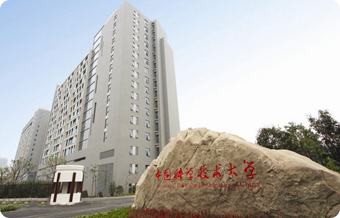

{{message1}}
中国科学院大学（英文名 ：University of Chinese Academy of Sciences），简称“国科大”， 是国家教育部正式批准成立的一所以研究生教育为主的科教融合、独具特色的高等学校。国科大的 前身是中国科学院研究生院，成立于1978年，是经党中央国务院批准创办的新中国第一所研究生院， 培养了中国的第一个理学博士、第一个工学博士、第一个女博士、第一个双学位博士。经教育部批准， 国科大从2014年开始招收本科生。
基于中国科学院各研究所的高水平科研优势和高层次人才资源， 国科大形成了由京内4个校区、京外5个教育基地和分布全国的 115个研究所组成的“大学校”。学校实行“统一招生、统一教育管理、统一 学位授予”和“院所融合的领导体制、师资队伍、管理体制、培养体系”； 完善了在集中教学校区完成课程教学和研究所科研实践为主的“两段式” 培养模式；形成了以国科大为核心和平台、以研究所为基础和延伸的完整教育体系。